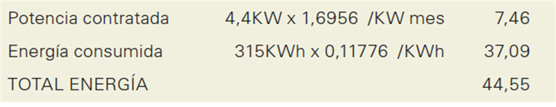
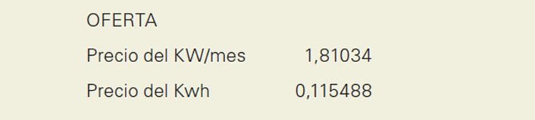

Tarea 4.3

Este es el extracto de la factura del gasto de energía eléctrica de una vivienda. No se tienen en cuenta impuestos ni otros gastos que aparecen en las facturas. Sólo vamos a fijarnos en los consumos y en el precio que se paga por ellos.
Se observa que hay un gasto fijo al mes, que sólo depende de la potencia contratada, y luego está lo que se paga por la energía consumida.
Así, en el caso de la factura que tenemos podemos observar que:
total\,energía = 7.46+315\cdot0.11776
Tanto 7,46 como 0,11776 son cantidades fijas, por lo que el total a pagar (f(x)) variará en función de los KWh consumidos (x). Es decir, la expresión algebraica que representa esta situación es:
y=7.46+0.11776x
a) Completa esta tabla en la que se muestran los valores de \(y\) (dinero que hay que pagar) correspondientes a diferentes valores de \(x\) (KWh consumidos en el mes).
b) Sobre unos ejes dibuja la representación gráfica. No olvides señalar los valores en cada eje.
c) ¿Qué tipo de gráfica has obtenido? ¿Es creciente o decreciente? ¿Cuál es la ordenada en el origen?
d) Elige dos puntos de los que has representado. Divide lo que ha variado la \(y\), al pasar del primero al segundo, entre lo que ha variado la \(x\). Anota el resultado y repite la operación con otro par de puntos de la gráfica. ¿Te sale lo mismo? ¿Crees que es casual? ¿Tiene algo que ver con la expresión algebraica de la que partíamos? Prueba con una tercera pareja de puntos. Comprobarás que sigue saliendo lo mismo. A esta cantidad se le llama pendiente de la recta.
e) Si la compañía mantuviese el precio por KWh pero el gasto fijo por la potencia contratada se cambiara a 8,45€/mes, ¿cómo sería la nueva gráfica obtenida?
f) Se recibe la siguiente información de otra compañía:

¿Sabrías darle algún consejo al dueño de la casa sobre la necesidad o no de cambiar de compañía? Para ello, representa la nueva función del gasto sobre los mismos ejes que la anterior. ¿Se cortan ambas rectas? ¿En qué punto? ¿Qué representa ese punto? A partir de estas preguntas, saca conclusiones.